In the wake of a sweeping right-wing victory in Nigeria’s recent Constitutional Assembly elections, the nation’s marginalized progressive factions are closing ranks.
Faced with a dominant conservative mandate — spearheaded by a spectrum of Biafran separatists, islamist and christian conservatives, and staunch Khalilists — three major progressive parties have formally established a joint parliamentary group — Nigerian Progressive Coalition for the Nature, People and Faith.
The Mottainai Ecological and Collective/Conserved Holocene Initiative, the Islamic Socialist Party of Nigeria, and the People’s Democratic Alliance have agreed to pool their legislative influence to stand as a unified bulwark against the assembly's reactionary majority.
The newly minted bloc aims to lay the groundwork for a progressive, democratic "New Nigeria." To cement this alliance, the coalition's leadership has drafted a binding "Points of Unity" program detailing their shared legislative agenda. The coalition has submitted the document directly to the editorial board of Forward! for its inaugural public release.
Nigerian Progressive Coalition: Points of Unity
We, the allied parties of the Nigerian Progressive Coalition, stand united in our mission to forge a new destiny for our nation. We are committed to building a Nigeria based firmly on the pillars of progressivism, environmentalism, and unbreakable solidarity among all our people. To replace the corrupt, centralized power of the past, we bind ourselves to the following foundational agreements:
-
Building a Progressive Nigeria: We stand united in our mission to forge a new destiny for our nation, building a Nigeria based firmly on the pillars of progressivism, environmentalism, and unbreakable solidarity among all our people.
-
A United Progressive Front: We are committed to maintaining a collaborative partnership built as a united front of progressive movement. To ensure a clear and consistent platform, we agree to address ideological and strategic differences through constructive internal discussions, presenting a unified message to the public.
-
Building an Ecological Civilization: We pledge to combat ecological disasters and transition away from outdated fossil fuels through targeted investments in green energy and sustainable industries. Furthermore, we mandate that all natural resources extracted from Nigerian land be treated as the nationally controlled, shared right of all Nigerians, ensuring environmental stewardship and sustainable development go hand-in-hand with our nation's progress.
-
Comprehensive Socio-Economic Welfare and Equity: We demand a redistributive economy driven by progressive taxation to guarantee universal healthcare, affordable public housing, and equal, standardized education. We are committed to securing total equality for women, protecting the workforce by managing labor automation, and building a sovereign economic future by renegotiating trade agreements like WAFTA to prioritize domestic industrial development and protect Nigerian workers.
-
Transition to Participatory Democracy: We support replacing the centralized, powerful presidency with a deeply consultative parliamentary system. Power must be transferred to an open body of elected representatives to ensure a democratic and pluralist government accountable to the people. Rather than concentrating authority in a single individual, we will integrate the broadest masses of the people into every stage of national development and progressive change. This democratic participation must also extend into our economic life, where the state, private enterprises, and workers — represented through empowered unions and works councils — will negotiate and cooperate harmoniously to guide the economy for the benefit of the whole society.
-
Secular Progressive State: We believe in upholding a neutrally secular state where national governance, constitutional rights, and criminal law remain strictly uniform and free from religious imposition, ensuring no Nigerian is ever disadvantaged for their personal beliefs. We recognize that our diverse nation cannot be united under sectarian or religious law. However, to build a peaceful and cohesive society, we extend a hand of tolerance to our diverse heritages by permitting customary rules and customs for private and spiritual matters within government-approved bounds.
-
Balanced Representation and Affirmative Action: Nigeria is a multi-ethnic Nigerian nation state with one single Nigerian national identity. Guided by this, we are committed to ensuring that Nigeria's administration reflects the diversity of our nation, balancing representation with meritocracy. While we uphold an efficient, meritocratic system for recruiting top-level national bureaucrats, we recognize the absolute necessity of a affirmative action agenda to rectify historical discrepancies. We will achieve this harmonious balance by emphasizing the recruitment of locals within regional administrations, ensuring ethnic parity in international educational opportunities, and investing heavily in the education of underrepresented and marginalized groups so they have a fair and equal chance to enter and succeed in our national system.
-
Upholding Human Rights through Anti-Corruption Reform: While we maintain a steadfast commitment to eradicating graft and protecting the nation's wealth, we stand united in the belief that the fight against corruption must never come at the expense of our fundamental freedoms. We agree to pursue comprehensive reforms regarding the Board for the Investigation of Corruption (BIC). By ensuring that anti-corruption efforts are strictly bound by due process and rigorous democratic legislative oversight, we will ensure these institutions protect the Nigerian people rather than target political dissidents.
-
Respecting Cultural Heritage within a Modern State: We acknowledge the significance of local traditions and the role of community leaders in fostering social cohesion. To balance this heritage with the needs of a unified nation, we support defining traditional leadership as a ceremonial and cultural function. We recognize the value of local community and tribal council representation as a means to respect and preserve diverse customs and traditions.
-
National Development and the Chancellorship of Work: We stand united in our support for the nomination of Usman Ma (PDA) to the position of Chancellor of Work. To successfully execute this mandate, we require the creation of a National Development and Reform Commission (NDRC) which will include all the political parties of the Nigerian Progressive Coalition in order to maintain a political balance. The NDRC will be responsible for implementing Nigeria's Five-Year Plan, which will prioritize: launching mass public works projects to drastically reduce youth unemployment; expanding cooperative housing in large southern urban centers to combat the acute housing shortage; and accelerating our green energy transition through the construction of dams, windmills, and solar farms. The Commission will drive sweeping industrial expansion in the North and provide crucial support for electrification, equipment provision, and infrastructure for cooperatives and state-owned agricultural enterprises in the interior.
